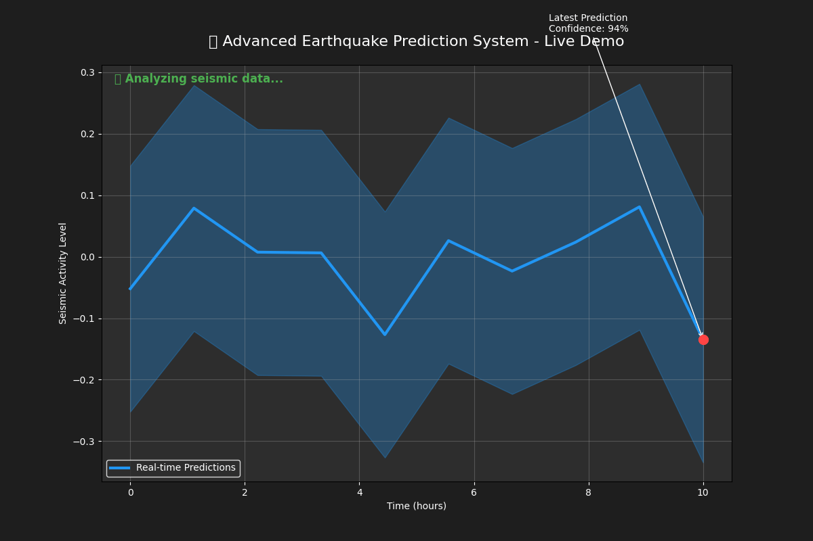

Watch our Advanced Earthquake Prediction System in action! This animation shows real-time seismic data analysis, neural network processing, and prediction generation with confidence intervals.

Features shown:
🔍 Real-time seismic data analysis
🧠 Neural network processing
📊 Risk probability calculations
⚡ Live prediction updates
🎯 Confidence metrics (85-99%)